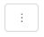

Organize training runs with MLflow experiments
Experiments are units of organization for your model training runs. There are two types of experiments: workspace and notebook.
You can create a workspace experiment from the Databricks Machine Learning UI or the MLflow API. Workspace experiments are not associated with any notebook, and any notebook can log a run to these experiments by using the experiment ID or the experiment name.
A notebook experiment is associated with a specific notebook. Databricks automatically creates a notebook experiment if there is no active experiment when you start a run using mlflow.start_run().
To see all of the experiments in a workspace that you have access to, select Machine Learning > Experiments in the sidebar.
Create workspace experiment
This section describes how to create a workspace experiment using the Databricks UI. You can create a workspace experiment directly from the workspace or from the Experiments page.
You can also use the MLflow API, or the Databricks Terraform provider with databricks_mlflow_experiment.
For instructions on logging runs to workspace experiments, see Logging example notebook.
Click
 Workspace in the sidebar.
Workspace in the sidebar.Navigate to the folder in which you want to create the experiment.
Right-click on the folder and select Create > MLflow experiment.
In the Create MLflow Experiment dialog, enter a name for the experiment and an optional artifact location. If you do not specify an artifact location, artifacts are stored in
dbfs:/databricks/mlflow-tracking/<experiment-id>.Databricks supports DBFS, S3, and Azure Blob storage artifact locations.
To store artifacts in S3, specify a URI of the form
s3://<bucket>/<path>. MLflow obtains credentials to access S3 from your clusters’s instance profile. Artifacts stored in S3 do not appear in the MLflow UI; you must download them using an object storage client.Note
For MLflow version 2.3.0 and above, the maximum size for an MLflow artifact uploaded to DBFS on AWS is up to 5 TiB. For MLflow version 2.3.0 and lower, the maximum size for an MLflow artifact uploaded to DBFS on AWS is 5 GiB.
Note
When you store an artifact in a location other than DBFS, the artifact does not appear in the MLflow UI. Models stored in locations other than DBFS cannot be registered in Model Registry.
Click Create. An empty experiment appears.
You can also create a new workspace experiment from the Experiments page. To create a new experiment, use the drop-down menu. From the drop-down menu, you can select either an AutoML experiment or a blank (empty) experiment.
AutoML experiment. The Configure AutoML experiment page appears. For information about using AutoML, see Train ML models with the Databricks AutoML UI.
Blank experiment. The Create MLflow Experiment dialog appears. Enter a name and optional artifact location in the dialog to create a new workspace experiment. The default artifact location is
dbfs:/databricks/mlflow-tracking/<experiment-id>.To log runs to this experiment, call
mlflow.set_experiment()with the experiment path. The experiment path appears at the top of the experiment page. See Logging example notebook for details and an example notebook.
Create notebook experiment
When you use the mlflow.start_run() command in a notebook, the run logs metrics and parameters to the active experiment. If no experiment is active, Databricks creates a notebook experiment. A notebook experiment shares the same name and ID as its corresponding notebook. The notebook ID is the numerical identifier at the end of a Notebook URL and ID.
For instructions on logging runs to notebook experiments, see Logging example notebook.
Note
If you delete a notebook experiment using the API (for example, MlflowClient.tracking.delete_experiment() in Python), the notebook itself is moved into the Trash folder.
View experiments
Each experiment that you have access to appears on the experiments page. From this page, you can view any experiment. Click on an experiment name to display the experiment page.
Additional ways to access the experiment page:
You can access the experiment page for a workspace experiment from the workspace menu.
You can access the experiment page for a notebook experiment from the notebook.
To search for experiments, type text in the Filter experiments field and press Enter or click the magnifying glass icon. The experiment list changes to show only those experiments that contain the search text in the Name, Created by, Location, or Description column.
Click the name of any experiment in the table to display its experiment page:

The experiment page lists all runs associated with the experiment. From the table, you can open the run page for any run associated with the experiment by clicking its Run Name. The Source column gives you access to the notebook version that created the run. You can also search and filter runs by metrics or parameter settings.
View workspace experiment
Click
Workspace in the sidebar.Go to the folder containing the experiment.
Click the experiment name.
View notebook experiment
In the notebook’s right sidebar, click the Experiment icon  .
.
The Experiment Runs sidebar appears and shows a summary of each run associated with the notebook experiment, including run parameters and metrics. At the top of the sidebar is the name of the experiment that the notebook most recently logged runs to (either a notebook experiment or a workspace experiment).
From the sidebar, you can navigate to the experiment page or directly to a run.
To view the experiment, click
 at the far right, next to Experiment Runs.
at the far right, next to Experiment Runs.To display a run, click the name of the run.
Manage experiments
You can rename, delete, or manage permissions for an experiment you own from the experiments page, the experiment page, or the workspace menu.
Note
You cannot directly rename, delete, or manage permissions on an MLflow experiment that was created by a notebook in a Databricks Repo. You must perform these actions at the Repo level.
Rename experiment from the experiments page or the experiment page
Preview
This feature is in Public Preview.
To rename an experiment from the experiments page or the experiment page, click  and select Rename.
Rename experiment from the workspace menu
Click
Workspace in the sidebar.Go to the folder containing the experiment.
Right-click on the experiment name and select Rename.
Copy experiment name
To copy the experiment name, click at the top of the experiment page. You can use this name in the MLflow command set_experiment to set the active MLflow experiment.
You can also copy the experiment name from the experiment sidebar in a notebook.
Delete notebook experiment
Notebook experiments are part of the notebook and cannot be deleted separately. When you delete a notebook, the associated notebook experiment is deleted. When you delete a notebook experiment using the UI, the notebook is also deleted.
To delete notebook experiments using the API, use the Workspace API to ensure both the notebook and experiment are deleted from the workspace.
Delete workspace experiment from the workspace menu
Click
Workspace in the sidebar.Go to the folder containing the experiment.
Right-click on the experiment name and select Move to Trash.
Delete workspace or notebook experiment from the experiments page or the experiment page
Preview
This feature is in Public Preview.
To delete an experiment from the experiments page or the experiment page, click and select Delete.
When you delete a notebook experiment, the notebook is also deleted.
Change permissions for experiment
To change permissions for an experiment from the experiment page, click Share.

You can change permissions for an experiment that you own from the experiments page. Click in the Actions column and select Permission.
For more information about experiment permissions, see Share experiments.
Copy experiments between workspaces
To migrate MLflow experiments between workspaces, you can use the community-driven open source project MLflow Export-Import.
With these tools, you can:
Share and collaborate with other data scientists in the same or another tracking server. For example, you can clone an experiment from another user into your workspace.
Copy MLflow experiments and runs from your local tracking server to your Databricks workspace.
Back up mission critical experiments and models to another Databricks workspace.